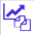

Indicadores económicos entidad
A través de esta opción se habilita la consulta y mantenimiento del valor absoluto, asociado a cada uno de los indicadores económicos "oficiales" vigentes para o a partir de la fecha señalada y definidos por la entidad para ser utilizados para el cálculo del beneficio o margen a obtener por los créditos utilizados por los clientes. Al igual que los valores de las tasas de cambio, es necesario realizar periódicamente, la actualización de los indicadores básicos para el correcto funcionamiento del sistema. El formulario cuenta con un filtro de búsqueda y contiene los enlaces: Actualizar, Eliminar y Adicionar.
Los campos de filtro permiten:
|
Fecha de ingreso |
Campo en el que mediante la funcionalidad de un calendario se selecciona la fecha para la que se requiere realizar la consulta. Por defecto muestra la fecha actual del sistema. |
|
Indicador económico |
Campo en el que se puede digitar o seleccionar de la lista de valores poblada a través de la opción tipos de tasas e indicadores el código asignado al indicador económico a consultar. |
Adicionar: Al activar ese enlace se despliega un formulario con los siguientes campos:
|
Indicador económico |
Campo obligatorio en el que se puede digitar o seleccionar de la lista de valores poblada a través de la opción tipos de tasas e indicadores el código asignado al indicador económico a incluir. Al ingresar un código se valida contra la lista; aquellos que no aparecen en la lista, pueden corresponder a indicadores que son el resultado de cálculos basados en algunas de estas cifras. |
|
Fecha de ingreso |
Campo obligatorio que, mediante la funcionalidad de un calendario, permite definir la fecha a partir de la cual la entidad determina el valor asociado a dicho indicador. Por integridad de los cálculos, solo permite definirle la misma fecha del día actual de proceso. |
|
Valor |
Campo numérico obligatorio, que en un máximo de seis enteros y seis decimales permite registrar el valor absoluto válido para cada indicador económico tipo base. |
Actualizar: Campo numérico obligatorio, que en un máximo de seis enteros y seis decimales permite registrar el valor absoluto válido para cada indicador económico tipo base.

Copiar indicadores económicos de ayer: Utilitario que permite replicar los valores para los diferentes indicadores económicos definidos el día anterior, si existen, y solamente modificar aquellos cuyos valores hayan variado, facilitando de esta manera la actualización de los mismos:
